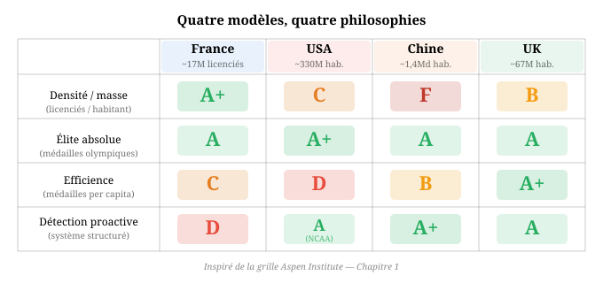

Qu'est-ce qu'un pays de sport ?
Affirmer qu’un pays est “un pays de sport” peut signifier trois choses différentes : qu’il produit beaucoup de pratiquants, beaucoup de médailles, ou beaucoup d’influence sur le sport mondial. Ces trois dimensions ne se recoupent pas nécessairement. Un pays peut envoyer dix-sept millions de licenciés dans ses clubs et ne pas produire de champion individuel de rang mondial. Un autre peut dominer les tableaux de médailles sans que sa population ne pratique quoi que ce soit. Un troisième peut exporter ses athlètes, ses entraîneurs et ses méthodes à travers le monde tout en reculant dans ses propres classements nationaux. Avant de demander si la France est un pays de sport, il faut donc établir ce que l’expression recouvre, examiner les modèles qui existent ailleurs, et identifier le cadre analytique qui permet de comparer sans simplifier.
Les trois strates d’une nation sportive
La première strate est celle de la pratique. Combien de personnes font du sport dans un pays donné ? À quelle fréquence ? Avec quel encadrement ? Cette dimension se mesure par le nombre de licenciés dans les fédérations agréées, le taux de participation sportive de la population, la densité d’associations et de clubs, et le volume d’équipements disponibles. La France, sur cette strate, affiche des chiffres considérables : 17,2 millions de licenciés, 360 000 associations sportives, 3,5 millions de bénévoles, 332 754 équipements sportifs (soit environ 4,9 pour 1 000 habitants). La dépense publique consacrée au sport atteint 15,8 milliards d’euros par an selon la Cour des comptes (2022), dont 7,6 milliards pour l’État (incluant 6,3 milliards pour l’Éducation nationale) et 8,2 milliards pour les collectivités territoriales. C’est la dépense publique sportive la plus élevée de l’Union européenne en valeur absolue : 0,6 % du PIB. Le poids économique total du sport représente environ 2,6 % du PIB, soit près de 65 milliards d’euros. Sur la strate de la pratique, la France est indiscutablement une grande nation sportive. Peu de pays au monde disposent d’un tissu associatif aussi dense, aussi maillé sur le territoire, et aussi massivement financé par la puissance publique.
La deuxième strate est celle de la performance. Combien de médailles un pays remporte-t-il aux Jeux olympiques, aux championnats du monde, dans les circuits professionnels internationaux ? Avec quelle régularité ? Dans combien de disciplines ? La performance se mesure en résultats absolus, mais aussi rapportés à la population et à la dépense. Le classement de l’Aspen Institute (2022-2023) place la France au 2e rang mondial en performance élite absolue, ce qui semble flatteur. Mais rapportée à sa population, la France descend au 26e rang. Et elle ne reçoit qu’un C en participation jeunesse. Le bilan de Paris 2024 (64 médailles, 16 or, 5e rang mondial) constitue un record historique, mais il dissimule des déséquilibres structurels : huit à neuf médailles proviennent des sports collectifs, quatre des seize médailles d’or ont été rapportées par un seul individu (Léon Marchand, formé aux États-Unis), et l’athlétisme, le sport le plus universel des Jeux, n’a produit qu’une seule médaille pour quatre-vingt-dix athlètes sélectionnés.
La troisième strate est celle de l’influence. Un pays de sport ne se contente pas de pratiquer et de gagner : il exporte. Il exporte ses athlètes vers les meilleures ligues du monde. Il exporte ses entraîneurs et ses méthodes. Il exporte ses formats de compétition, ses règles, ses standards. Les États-Unis dominent cette strate de manière écrasante : la NBA, la NFL, la MLB et la NHL sont les ligues sportives les plus regardées, les plus riches et les plus imitées au monde. Le système NCAA, avec ses 1 100 universités et ses 500 000 athlètes boursiers, est devenu la machine de détection et de formation la plus puissante jamais conçue. La France, sur cette strate, occupe une position ambiguë : elle exporte massivement ses joueurs de football (première nation mondiale en revenus de transferts internationaux avec 3,98 milliards d’euros entre 2014 et 2024), ses judokas, ses entraîneurs d’escrime, mais elle ne possède aucune ligue d’envergure mondiale à l’exception peut-être du Top 14 en rugby.
L’intérêt de cette décomposition en trois strates est qu’elle révèle des profils nationaux radicalement différents. Les États-Unis dominent les strates de la performance et de l’influence, mais reçoivent un D en soutien gouvernemental au sport et se classent au 40e rang per capita selon l’Aspen Institute. La Norvège est première per capita, dispose d’une culture sportive de masse exemplaire, mais ne figure qu’au 11e rang en valeur absolue. La Chine, 2e nation aux Jeux de Paris 2024 avec 40 médailles d’or, reçoit un F en participation de masse. Chaque pays excelle sur certaines strates et échoue sur d’autres. La question “est-ce un pays de sport ?” n’a de sens que si l’on précise de quelle strate on parle.
Six modèles nationaux
Le modèle américain : le marché comme système
L’industrie du sport américaine pèse 1 060 milliards de dollars, soit environ 40 % du marché mondial. Il n’existe pas de ministère fédéral des Sports. Le gouvernement ne finance pas le sport de haut niveau. La puissance sportive américaine repose intégralement sur le marché : les ligues professionnelles (NFL, NBA, MLB, NHL) génèrent des revenus colossaux qui alimentent des infrastructures sans équivalent, et le système universitaire NCAA sert de machine de détection à l’échelle du continent.
Les chiffres de la NCAA donnent le vertige : 1 100 universités, 15,8 milliards de dollars de revenus pour la seule Division I, un marché NIL (Name, Image, Likeness) de 1,67 milliard de dollars en 2024-2025, 500 000 athlètes boursiers. Le programme sportif de l’University of Texas est valorisé à 1,48 milliard de dollars. Le sport fonctionne aux États-Unis comme un ascenseur social pour la classe ouvrière et la classe moyenne : une bourse sportive universitaire représente souvent la seule voie d’accès à l’enseignement supérieur pour des dizaines de milliers de jeunes Américains chaque année.
Le paradoxe américain est le suivant : cette puissance de marché produit une domination absolue en performance et en influence, mais elle ne produit pas de politique publique de sport pour tous. Le soutien gouvernemental est noté D par l’Aspen Institute. Le classement per capita situe les États-Unis au 40e rang. Le sport de masse, aux États-Unis, est une affaire privée : qui peut payer pratique, qui ne peut pas ne pratique pas. Le modèle américain démontre qu’il est possible de dominer le sport mondial sans aucune volonté politique de démocratisation de la pratique.
Le modèle chinois : l’État comme usine
Le modèle chinois porte un nom : le Juguo Tizhi, le “système du pays entier”. L’État identifie les enfants à potentiel dès l’âge de six ou sept ans, les place dans l’un des 150 camps d’élite et 3 000 écoles de sport du pays, et les forme dans un système fermé qui produit environ 300 000 athlètes de haut niveau. La stratégie est explicitement cynique : la Chine concentre ses moyens sur les disciplines dites “small, fast, women, water, agile”, c’est-à-dire les sports à fort rendement médaillaire (plongeon, haltérophilie, tir, tennis de table, badminton, gymnastique). Le résultat est spectaculaire en termes de médailles : la Chine s’est classée 2e nation aux Jeux de Paris 2024 avec 40 médailles d’or.
Mais le modèle chinois obtient un F en participation de masse selon l’Aspen Institute. Le sport, en Chine, n’est pas un phénomène de société. C’est un outil de prestige national, piloté par l’État, déconnecté de la vie quotidienne de la population. La Chine démontre qu’il est possible de gagner massivement aux Jeux olympiques sans être, en aucune façon raisonnable, “un pays de sport”.
Le modèle britannique : la concentration comme doctrine
Le cas britannique est le plus instructif pour la France, parce qu’il documente à la fois la puissance de la concentration et les ravages de la dilution. Aux Jeux d’Atlanta en 1996, le Royaume-Uni remporte une seule médaille d’or et termine au 36e rang. Le choc est tel qu’il provoque la création d’UK Sport en 1997, agence dédiée exclusivement au sport de haut niveau, financée par la Loterie nationale, et gouvernée par un principe explicite : “No Compromise”.
La trajectoire qui suit est sans précédent dans l’histoire du sport moderne. De 5 millions de livres sterling de budget annuel en 1996, UK Sport passe à 58,9 millions pour Sydney 2000 (11 or), 71 millions pour Athènes 2004 (9 or), 235,1 millions pour Pékin 2008 (19 or), puis 313,4 millions pour Londres 2012 : 29 médailles d’or, 65 médailles au total, 3e rang mondial. En seize ans, le Royaume-Uni est passé du 36e au 3e rang mondial. Le budget a été multiplié par soixante. Le nombre de médailles d’or par vingt-neuf.
Le principe “No Compromise” signifie deux choses. Premièrement, UK Sport ne finance que les sports qui ont un potentiel de médaille démontrable, et coupe les budgets de ceux qui déçoivent. Deuxièmement, UK Sport sépare strictement le sport de haut niveau du sport pour tous : ce sont deux missions différentes, confiées à deux agences différentes, avec deux budgets différents. La concentration des 30 sports olympiques financés à Londres 2012 est maximale.
Mais la suite documente les limites du modèle. Pour le cycle menant aux Jeux de Rio 2016, UK Sport réduit le nombre de sports financés à 28 : le résultat est encore meilleur (27 or, 2e rang mondial), faisant du Royaume-Uni le seul pays de l’histoire à améliorer son bilan l’édition suivant celle qu’il a accueillie. Puis la dilution commence. Pour Tokyo 2020, le nombre de sports financés remonte à 33, avec un budget de 337,8 millions de livres : 22 or. Pour Paris 2024, le budget atteint un record de 374,1 millions de livres, mais il est réparti sur 33 sports olympiques : 14 or seulement, 7e rang, le plus bas depuis Athènes 2004. En trois cycles olympiques, le Royaume-Uni est passé de 29 à 14 médailles d’or. Le budget a augmenté de 19 %. Le nombre de médailles d’or a chuté de 52 %. La dilution tue la performance.
Le modèle norvégien : la culture comme socle
La Norvège, 5,4 millions d’habitants, est la première nation per capita au classement de l’Aspen Institute. C’est aussi la nation la plus médaillée de l’histoire des Jeux olympiques d’hiver. La clé norvégienne n’est ni le marché, ni l’État, ni la concentration : c’est la culture. Le sport de plein air (ski de fond, biathlon, randonnée, voile) est inscrit dans le mode de vie national. Le gouvernement finance le sport pour tous, pas seulement l’élite. Le mouvement associatif est massif rapporté à la population.
Le modèle norvégien fonctionne parce que la pratique de masse crée naturellement un vivier d’où émergent les talents d’exception. La Norvège n’a pas besoin de programme de détection sophistiqué : quand la totalité d’une nation skie, les meilleurs skieurs émergent par sélection naturelle. C’est un modèle difficilement reproductible : il repose sur des conditions géographiques, climatiques et culturelles spécifiques. Mais il rappelle un fait : la performance d’élite, dans la durée, ne peut se construire que sur une base de pratique large.
Le modèle australien : l’institut comme levier
L’Australie a créé l’Australian Institute of Sport (AIS) en 1981, après un bilan olympique jugé décevant à Montréal en 1976. L’AIS concentre des moyens scientifiques, techniques et d’entraînement sur un nombre restreint de disciplines à potentiel. Le modèle australien est caractérisé par des cycles d’investissement : des pics de financement autour des Jeux que l’Australie accueille (Sydney 2000 : 58 médailles, 4e rang) suivis de baisses qui se traduisent par des reculs dans les classements. L’Australie illustre la fragilité des modèles institutionnels quand le financement fluctue. Brisbane 2032 sera le prochain test de cette logique cyclique.
Le modèle allemand : le déclin d’un héritage
L’Allemagne est le miroir le plus pertinent pour la France, parce qu’elle partage le même profil (83 millions d’habitants, PIB comparable, système fédéral, densité de clubs) et traverse une crise de résultats que la France pourrait connaître après Paris 2024. L’Allemagne réunifiée a hérité du système sportif le plus performant de l’histoire : celui de la RDA, qui avait fait de la détection scolaire systématique, de la science de l’entraînement et de la concentration des moyens un art d’État. En 1992, première olympiade de l’Allemagne réunifiée, le pays remportait 82 médailles, dont 33 en or, troisième rang mondial. Trente-deux ans plus tard, à Paris en 2024 : 33 médailles, 12 en or, dixième rang. Une chute de 60 %.
Cette trajectoire est structurelle, pas conjoncturelle. L’Allemagne a eu son pire résultat post-réunification à Paris 2024 alors même que la Russie, son principal concurrent historique dans les sports mécaniques (canoë, aviron, natation), était quasi absente. Les causes sont documentées : l’épuisement de l’héritage est-allemand (les coaches et athlètes formés par le système RDA ont pris leur retraite), une bureaucratie fédérale qui absorbe les budgets avant qu’ils n’atteignent les athlètes (le système des 16 Länder crée des doublons), un saupoudrage des financements sur trop de disciplines, et l’échec de la PotAS (Potenzialanalysesystem), commission d’évaluation scientifique créée en 2017 pour concentrer les moyens sur les sports à potentiel, mais dont les recommandations ont été contestées par les fédérations. Le coût par médaille allemand à Paris (3,7 millions d’euros) est deux fois supérieur au coût français (1,8 million), pour moitié moins de médailles.
L’Allemagne excelle encore dans les sports “mécaniques-équestres” hérités de la RDA – canoë sprint (33 médailles d’or historiques, premier contributeur), équitation (domination écrasante en dressage), aviron – mais elle a perdu la chaîne de transmission générationnelle dans la plupart des autres disciplines. C’est l’anti-modèle de ce que la France doit éviter après Paris 2024 : la dissipation d’un héritage par l’incapacité à en assurer la succession.
Le miroir de l’éducation
Le parallèle avec l’éducation est éclairant, parce que les mêmes trois strates s’appliquent et produisent les mêmes paradoxes.
Sur la strate de l’accès, les États-Unis possèdent Stanford, le MIT, Harvard et un réseau d’universités de recherche sans équivalent au monde. Mais le système scolaire public américain est médiocre en comparaison internationale : les résultats PISA placent régulièrement les États-Unis dans la moyenne basse des pays de l’OCDE. La Finlande, à l’inverse, excelle dans l’accès : son système scolaire est le plus égalitaire au monde, chaque enfant reçoit une éducation de qualité. Mais la Finlande ne possède aucune université de rang mondial dans le top 50. La France, elle, se situe à mi-chemin : elle dispose d’un système scolaire universel et d’un réseau de grandes écoles et d’universités qui produisent des chercheurs de premier plan, mais elle ne parvient ni à l’excellence démocratique finlandaise ni à la puissance de recherche américaine.
Sur la strate de l’excellence, la question devient : qui produit des lauréats du prix Nobel, des médaillés Fields, des chercheurs de rang mondial ? Les États-Unis dominent massivement, mais leurs lauréats sont souvent des immigrés formés ailleurs. Le Royaume-Uni performe au-delà de sa taille démographique, grâce à Cambridge et Oxford. La France, avec ses 70 prix Nobel et ses 14 médailles Fields, est une puissance intellectuelle historique, mais la tendance récente est à l’érosion relative.
Sur la strate de l’influence, la question est : quel pays exporte son modèle éducatif ? Le modèle anglo-saxon (université de recherche, campus, sélection par le mérite académique) s’est imposé mondialement. Le modèle français (grandes écoles, classes préparatoires, agrégation) reste un objet de fascination intellectuelle mais n’a été adopté par personne.
Le parallèle est frappant : un pays peut former des millions d’élèves avec un système de qualité et échouer à produire des exceptions au plus haut niveau mondial. Un pays peut produire des exceptions sans que son système de base ne fonctionne. L’accès à la pratique et la production de l’excellence sont deux problèmes distincts, qui exigent des politiques distinctes. C’est exactement la confusion que le système sportif français entretient depuis des décennies, et c’est cette confusion que les articles suivants de cet essai examineront en détail.
Le cadre SPLISS : neuf piliers pour mesurer un système sportif
Le cadre académique le plus robuste pour évaluer un système sportif national est le modèle SPLISS (Sports Policy factors Leading to International Sporting Success), développé par De Bosscher, Shibli et leurs collaborateurs. Publié initialement en 2006, révisé et étendu à quinze nations et trois mille athlètes dans sa version la plus récente (2024), le modèle SPLISS identifie neuf piliers qui déterminent le succès sportif international d’un pays.
Le premier pilier est le soutien financier. Combien d’argent public et privé est investi dans le sport de haut niveau ? La France y consacre environ 20 milliards d’euros par an en dépense publique totale (État et collectivités), dont 114 millions d’euros spécifiquement pour la haute performance via l’ANS. Le Royaume-Uni, via UK Sport, investit 374,1 millions de livres sterling (environ 430 millions d’euros) exclusivement dans la haute performance. La comparaison brute est trompeuse : la France dépense globalement bien plus, mais la part fléchée vers la haute performance est comparable, voire inférieure, et surtout bien plus dispersée.
Le deuxième pilier est la structure organisationnelle. Comment le sport est-il gouverné ? Existe-t-il une agence unique responsable de la haute performance, ou la gouvernance est-elle éclatée ? En France, la gouvernance est partagée entre le ministère des Sports, l’Agence nationale du sport (ANS), les fédérations, les collectivités territoriales et le CNOSF. La Cour des comptes a pointé en 2013 le “saupoudrage et la dissémination des subventions” comme un problème structurel. Cent-dix-neuf disciplines sont reconnues, dont quarante non olympiques. Claude Onesta, dans son rapport de 2018 sur la haute performance sportive, a posé un diagnostic sans appel : “Notre modèle date des années 60.” Construit en réaction à la débâcle de Rome 1960 (cinq médailles, aucune en or), il a permis de passer de cinq à quarante-deux médailles en cinquante ans. Puis il a plafonné : “les résultats sont stables depuis vingt ans, entre trente-sept et quarante-deux médailles. Sur la même période, les Britanniques sont passés de quinze à soixante-sept.” Onesta pointait surtout une confusion structurelle entre “haut niveau” et “haute performance” – le système français traite de la même manière l’adolescent qui entre en pôle Espoir et le champion qui vise un podium olympique, ce qui dilue les moyens et brouille les objectifs.
Le troisième pilier est la participation de base. Quel est le vivier de pratiquants dans lequel le système de haut niveau peut puiser ? Avec 17,2 millions de licenciés et 360 000 associations, la France dispose d’un vivier parmi les plus larges au monde en valeur absolue. Mais l’Aspen Institute attribue un C à la France en participation jeunesse, ce qui suggère que ce vivier, bien que vaste, comporte des angles morts dans la captation des jeunes.
Le quatrième pilier est l’identification des talents. Comment le système repère-t-il les futurs champions ? C’est le pilier où la France accuse le déficit le plus documenté. La détection reste largement passive : le système attend que les talents émergent naturellement du tissu associatif, plutôt que de les chercher activement. Il n’existe pas de programme proactif de type “Talent ID” comparable à ce que le Royaume-Uni a mis en place. Le maillage associatif garantit l’exposition au sport, mais le passage de “bon pratiquant” à “champion potentiel” dépend encore trop du hasard, de la géographie, et du milieu familial.
Le cinquième pilier est le soutien aux athlètes de haut niveau. Les conditions matérielles offertes aux sportifs d’élite (bourses, statut, couverture sociale, reconversion) déterminent leur capacité à se consacrer pleinement à la performance. Le budget de l’ANS consacre 17,3 millions d’euros directement aux athlètes, un montant dont la modestie contraste avec l’ambition affichée. Au Royaume-Uni, les bourses individuelles atteignent 22 500 livres par an, un niveau qui, selon les athlètes britanniques eux-mêmes, est devenu insuffisant après une décennie sans revalorisation face à 40 % d’inflation cumulée.
Le sixième pilier est l’infrastructure. Les équipements d’entraînement et de compétition sont-ils au niveau international ? La France dispose de l’INSEP (28 hectares, 28 disciplines, environ 800 sportifs, 150 entraîneurs) et d’un réseau de CREPS. Plus de 90 % des médaillés olympiques français sont passés par l’INSEP. Mais la centralisation parisienne de l’essentiel des moyens de haut niveau pose un problème d’accès pour les athlètes formés en province et en outre-mer.
Le septième pilier est l’encadrement. La qualité et la quantité des entraîneurs de haut niveau déterminent directement la capacité d’élévation des talents. La France exporte massivement ses entraîneurs dans certains sports (judo, escrime, cyclisme), ce qui témoigne d’un savoir-faire reconnu mondialement. Mais cette exportation signifie aussi que le système français perd une partie de son capital humain d’encadrement au profit de pays concurrents.
Le huitième pilier est le système de compétitions. Les athlètes ont-ils accès à une densité compétitive suffisante pour progresser ? C’est un des facteurs qui expliquent l’exode vers la NCAA en athlétisme ou vers les équipes étrangères en cyclisme : la densité de compétitions de haut niveau sur le sol français est insuffisante dans certaines disciplines pour permettre une progression continue.
Le neuvième pilier est la recherche scientifique appliquée au sport. Biomécanique, physiologie de l’effort, nutrition, récupération, analyse de données : la recherche sportive est devenue un avantage compétitif majeur. La France dispose de laboratoires de qualité (deux à l’INSEP), mais leur articulation avec la pratique de terrain reste inégale selon les fédérations.
La position de la France sur ces neuf piliers dessine un profil caractéristique : fort en soutien financier global, fort en participation de base, fort en infrastructure centralisée, mais faible en identification des talents, en concentration des moyens, et en densité compétitive. C’est le profil d’un pays qui investit massivement dans la base sans optimiser le passage vers le sommet. Un pays qui forme, mais qui ne détecte pas assez, et qui peine à élever.
Ce cadre posé, la suite de cet essai examinera comment ce profil se traduit concrètement dans les résultats français, sport par sport, et pourquoi le système sportif français ressemble, dans sa structure et dans ses échecs, à un autre grand système national : le système éducatif.
